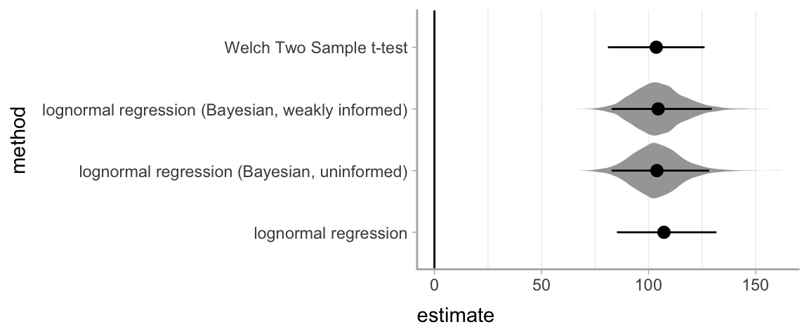

A Effect size appendix
This appendix contains supplements to the effect size guideline.
A.1 Alternative approaches for simple effect size exemplar
The simple effect size exemplar demonstrates one common technique for esitmating mean differences in resposne time and the uncertainty around them (Student’s t confidence intervals). This supplement demonstrates several possible approaches one might take to calculate differences in response time, and compares them. It is not intended to be exhaustive.
A.1.1 Libraries needed for this analysis
# See here for rstan installation instructions:
# https://github.com/stan-dev/rstan/wiki/RStan-Getting-Started
library(rstan)
library(tidyverse)
library(modelr) # for data_grid()
library(broom) # for tidy()
library(ggstance) # for geom_pointrangeh(), stat_summaryh()
library(brms) # for brm() (requires rstan)
library(tidybayes) # for mean_qi()
# requires `import` and `MASS` packages to be installed
import::from(MASS, mvrnorm)A.1.2 Data
We will use the same data as the simple effect size exemplar:
set.seed(12)
n <- 20
data <- tibble(
group = rep(c("A", "B"), each = n),
completion_time_ms = c(
rlnorm(n, meanlog = log(170), sdlog = 0.3),
rlnorm(n, meanlog = log(50), sdlog = 0.4)
)
)See that exemplar for more information.
A.1.3 Calculating simple effect size
A.1.3.1 Approach 1: Difference in means with Student’s t confidence interval
This is the approach used in the exemplar. While the response distributions are non-normal, the sampling distribution of the difference in means will still be defined on \((-\infty, +\infty)\) and approximately symmetrical (per the central limit theorem), so we can compute a Student’s t distribution confidence interval for the difference in means.
t_interval <-
t.test(completion_time_ms ~ group, data = data) %>%
tidy() # put result in tidy tabular format
t_interval| estimate | estimate1 | estimate2 | statistic | p.value | parameter | conf.low | conf.high | method | alternative |
|---|---|---|---|---|---|---|---|---|---|
| 103.6021 | 159.0898 | 55.48774 | 9.388748 | 0 | 28.66574 | 81.02211 | 126.182 | Welch Two Sample t-test | two.sided |
The tidy()ed output of the t.test() function includes an estimate of the mean difference in milliseconds (estimate) as well as the lower (conf.low) and upper (conf.high) bounds of the 95% confidence interval.
A.1.3.2 Approach 2a: Ratio of geometric means with Student’s t confidence interval on log-scale
For responses that are assumed to be log-normal, one alternative is to calculate the mean difference on the log scale. Because the mean on the log scale corresponds to the geometric mean of the untransformed responses, this is equivalent to calculating a ratio of geometric means on the untransformed scale (in this case, a ratio of geometric mean response times). See the Assumptions and Robustness guideline for more information.
log_t_interval <-
t.test(log(completion_time_ms) ~ group, data = data) %>%
tidy() # put result in tidy tabular format
log_t_interval| estimate | estimate1 | estimate2 | statistic | p.value | parameter | conf.low | conf.high | method | alternative |
|---|---|---|---|---|---|---|---|---|---|
| 1.085344 | 5.036436 | 3.951092 | 11.05821 | 0 | 34.90244 | 0.8860725 | 1.284615 | Welch Two Sample t-test | two.sided |
We can also transform this difference (in the log scale) into a ratio of geometric mean response times:
log_t_ratios <- log_t_interval %>%
mutate_at(vars(estimate, estimate1, estimate2, conf.low, conf.high), exp)
log_t_ratios| estimate | estimate1 | estimate2 | statistic | p.value | parameter | conf.low | conf.high | method | alternative |
|---|---|---|---|---|---|---|---|---|---|
| 2.960458 | 153.9204 | 51.9921 | 11.05821 | 0 | 34.90244 | 2.425584 | 3.613278 | Welch Two Sample t-test | two.sided |
This output shows the estimated geometric mean response times (estimate1 and estimate2), and an estimate of the ratio between them (estimate = estimate1/estimate2) as well as the lower (conf.low) and upper (conf.high) bounds of the 95% confidence interval of that ratio. This allows us to estimate how many times slower or faster one condition is compared to another.
However, since we have some sense in this context of how large or small we might want response times to be on the original scale (e.g., people tend to perceive differences on the order of 100ms), it may be easier to interpret effect sizes if we calculate them on that scale.
In this case, the geometric mean of condition A is roughly 154 and of B is roughly 52.0. A is about 2.96 \(\times\) B, with a 95% confidence interval of [2.43\(\times\), 3.61\(\times\)]. So we have: 52.0 \(\times\) 2.96 \(\approx\) 154.
A.1.3.3 Approach 2b: log-normal regression with marginal estimate of difference in means using simulation
We can run a linear regression that is equivalent to approach 2a:
m_log <- lm(log(completion_time_ms) ~ group, data = data)
summary(m_log)##
## Call:
## lm(formula = log(completion_time_ms) ~ group, data = data)
##
## Residuals:
## Min 1Q Median 3Q Max
## -0.49993 -0.18776 0.00806 0.12970 0.78975
##
## Coefficients:
## Estimate Std. Error t value Pr(>|t|)
## (Intercept) 5.03644 0.06940 72.57 < 2e-16 ***
## groupB -1.08534 0.09815 -11.06 1.94e-13 ***
## ---
## Signif. codes: 0 '***' 0.001 '**' 0.01 '*' 0.05 '.' 0.1 ' ' 1
##
## Residual standard error: 0.3104 on 38 degrees of freedom
## Multiple R-squared: 0.7629, Adjusted R-squared: 0.7567
## F-statistic: 122.3 on 1 and 38 DF, p-value: 1.939e-13This model estimates the geometric means in each group. However, we want to know the difference in means on the original (time) scale, not on the log scale.
We can translate the log-scale means into means on the original scale using the fact that if a random variable \(X\) is log-normally distributed with mean \(\mu\) and standard deviation \(\sigma\):
\[ \log(X) \sim \mathrm{Normal}(\mu, \sigma^2) \]
Then the mean of \(X\) is (see here):
\[ \mathbf{E}[X] = e^{\mu+\frac{\sigma^2}{2}} \]
We will use the sampling distribution of the coefficients of m_log to generate samples of \(\mu\) in each group, then translate these samples (along with an estimate of \(\sigma\)) onto the outcome scale. Given an estimate of the coefficients (\(\boldsymbol{\hat\beta}\)) and an estimate of the covariance matrix (\(\boldsymbol{\hat\Sigma}\)), the sampling distribution of the coefficients on a log scale is a multivariate normal distribution:
\[ \mathrm{Normal}(\boldsymbol{\hat\beta}, \boldsymbol{\hat\Sigma}) \] We can sample from that distribution and use the estimated log-scale standard deviation (\(\hat\sigma\)) to generate sample means on the untransformed scale, which we can use to derive a difference of means on the original scale and a confidence interval around that difference (this is sort of treating the sampling distribution as a Bayesian posterior):
log_interval <-
mvrnorm(10000, mu = coef(m_log), Sigma = vcov(m_log)) %>%
as_data_frame() %>%
mutate(
sigma = sigma(m_log), # Using MLE estimate of residual SD. Could also sample from
# sqrt(rgamma(nrow(.), (n - 1)/2, ((n - 1)/sigma(m_log)^2)/2))
# but results are similar
# get samples of means for each group on the original scale
mu_A = `(Intercept)`,
mean_A = exp(mu_A + sigma^2 / 2),
mu_B = `(Intercept)` + groupB,
mean_B = exp(mu_B + sigma^2 / 2),
# get samples of the difference in means on the original scale
estimate = mean_A - mean_B
) %>%
mean_qi(estimate) %>%
to_broom_names() %>% # makes the column names the same as those returned by broom::tidy
mutate(method = "lognormal regression")## Warning: `as_data_frame()` is deprecated, use `as_tibble()` (but mind the new semantics).
## This warning is displayed once per session.log_interval| estimate | conf.low | conf.high | .width | .point | .interval | method |
|---|---|---|---|---|---|---|
| 107.2028 | 85.23455 | 131.7186 | 0.95 | mean | qi | lognormal regression |
This approach does not account for non-constant variance on the log scale, however; i.e., the fact that the variances of the two groups are different. The next approach does.
A.1.3.4 Approach 3a: log-normal regression with marginal estimate of difference in means using Bayesian regression (uninformed priors)
For this approach, we will use a Bayesian log-normal regression model to estimate the mean and variance of the response distribution in each group on a log scale. We will then transform these parameters into a difference in means on the original (millisecond) scale, as in approach 2b.
For this approach, we will use a Bayesian log-normal regression with uninformed priors. This model is the same as the lm model in approach 2, except that it also allows the variance to be different in each group (in other words, it does not assume constant variance between groups, also known as homoskedasticity).
m_log_bayes <- brm(brmsformula(
completion_time_ms ~ group,
sigma ~ group # allow variance to be different in each group
), data = data, family = lognormal)Similar to approach 2b, we will derive samples of the mean difference, this time from the posterior distribution. We will use these to derive a credible interval (Bayesian analog to a confidence interval) around the mean difference:
log_bayes_samples <-
m_log_bayes %>%
tidy_draws() %>%
mutate(
mu_A = b_Intercept,
sigma_A = exp(b_sigma_Intercept),
mean_A = exp(mu_A + sigma_A^2 / 2),
mu_B = b_Intercept + b_groupB,
sigma_B = exp(b_sigma_Intercept + b_sigma_groupB),
mean_B = exp(mu_B + sigma_B^2 / 2),
estimate = mean_A - mean_B
)
log_bayes_interval <-
log_bayes_samples %>%
mean_qi(estimate) %>%
to_broom_names() %>%
mutate(method = "lognormal regression (Bayesian, uninformed)")
log_bayes_interval| estimate | conf.low | conf.high | .width | .point | .interval | method |
|---|---|---|---|---|---|---|
| 104.1443 | 82.37689 | 127.9494 | 0.95 | mean | qi | lognormal regression (Bayesian, uninformed) |
Alternatively, we could use tidybayes::add_fitted_draws, which internally calls brmsfit::posterior_linpred, which does the same math as above to calculate the posterior distribution for the mean on the response scale. This saves us some math (and makes sure we did not do that math incorrectly):
log_bayes_samples <-
data %>%
# reverse the order of group so that the output is A - B instead of B - A
data_grid(group = fct_rev(group)) %>%
add_fitted_draws(m_log_bayes, value = "estimate") %>%
ungroup() %>%
compare_levels(estimate, by = group) %>%
mutate(method = "lognormal regression (Bayesian, uninformed)") %>%
group_by(method)
log_bayes_interval <-
log_bayes_samples %>%
mean_qi(estimate) %>%
to_broom_names()
log_bayes_interval| method | estimate | conf.low | conf.high | .width | .point | .interval |
|---|---|---|---|---|---|---|
| lognormal regression (Bayesian, uninformed) | 104.1443 | 82.37689 | 127.9494 | 0.95 | mean | qi |
This gives the estimated mean difference between conditions in milliseconds (estimate), as well as the lower (conf.low) and upper (conf.high) bounds of the 95% quantile credible interval of that difference.
A.1.3.5 Approach 3b: log-normal regression with marginal estimate of difference in means using Bayesian regression (weakly informed priors)
Finally, let’s run the same analysis with weakly informed priors based on what we might believe reasonable ranges of the effect are. To see what priors we can set in brm models, we can use the get_prior() function:
get_prior(brmsformula(
# for using informed priors, the `0 + intercept` formula can be helpful: otherwise,
# brm re-centers the data on 0, which can make it harder to set an informed prior.
# see help("set_prior") for more information.
completion_time_ms ~ group + 0 + intercept,
sigma ~ group + 0 + intercept
), data = data, family = lognormal)| prior | class | coef | group | resp | dpar | nlpar | bound |
|---|---|---|---|---|---|---|---|
| b | |||||||
| b | groupB | ||||||
| b | intercept | ||||||
| b | sigma | ||||||
| b | groupB | sigma | |||||
| b | intercept | sigma |
This shows priors on the log-scale mean and priors on the log-scale standard deviation (sigma).
First, we’ll assume that completion time is something like a pointing task: not reasonably faster than 10ms or slower than 2s (2000ms). On log scale, that is between approximately \(\log(10) \approx 2\) and \(\log(2000) \approx 8\), so we’ll center our prior intercept between these (\((8+2)/2\)) and give it a 95% interval that covers them (sd of \((8-2)/4\)): \(\mathrm{Normal}(5, 1.5)\).
For differences in log mean, we’ll assume that times will not be more than about 100\(\times\) difference in either direction: a zero-centered normal prior with standard deviation \(\approx log(100)/2 \approx 2.3\): \(\mathrm{Normal}(0, 2.3)\).
Since the standard deviation is estimated using a submodel that itself uses a log link, we have to make a prior on the log scale of log standard deviation. For standard deviation on the log scale, let’s assume a baseline of around 100ms response time. Then, our prior on standard deviation on the log scale could reasonbly be as small as one reflecting individual differences on the order of 10ms: \(log(110) - log(100) \approx 0.1 \approx e^-2.4\), or as large as one reflecting a difference of 1 second: \(log(1100) - log(100) \approx 2.4 \approx e^0.9\). So we’ll center our log log sd prior at \((0.9 + -2.4)/2\) and give it a 95% interval that covers them (sd of \((0.9 - -2.4)/4\)): \(\mathrm{Normal}(-0.75, 0.825)\).
Finally, for differences in log log standard deviation, we’ll assume zero-centered with similar magnitude to the intercept: \(\mathrm{Normal}(0, 0.825)\).
These priors can be specified as follows:
log_bayes_priors <- c(
prior(normal(5.5, 1.75), class = b, coef = intercept),
prior(normal(0, 2.3), class = b, coef = groupB),
prior(normal(-0.75, 0.825), class = b, coef = intercept, dpar = sigma),
prior(normal(0, 0.825), class = b, coef = groupB, dpar = sigma)
)
log_bayes_priors| prior | class | coef | group | resp | dpar | nlpar | bound |
|---|---|---|---|---|---|---|---|
| normal(5.5, 1.75) | b | intercept | |||||
| normal(0, 2.3) | b | groupB | |||||
| normal(-0.75, 0.825) | b | intercept | sigma | ||||
| normal(0, 0.825) | b | groupB | sigma |
Then we can re-run the model from approach 3a with those priors:
m_log_bayes_informed <- brm(brmsformula(
completion_time_ms ~ group + 0 + intercept,
sigma ~ group + 0 + intercept
), data = data, family = lognormal, prior = log_bayes_priors)Similar to approach 2b, we will derive samples of the mean difference, this time from the posterior distribution. We will use these to derive a credible interval (Bayesian analog to a confidence interval) around the mean difference:
log_bayes_informed_samples <-
data %>%
# reverse the order of group so that the output is A - B instead of B - A
data_grid(group = fct_rev(group)) %>%
add_fitted_draws(m_log_bayes_informed, value = "estimate") %>%
ungroup() %>%
compare_levels(estimate, by = group) %>%
mutate(method = "lognormal regression (Bayesian, weakly informed)") %>%
group_by(method)
log_bayes_informed_interval <-
log_bayes_informed_samples %>%
mean_qi(estimate) %>%
to_broom_names()
log_bayes_informed_interval| method | estimate | conf.low | conf.high | .width | .point | .interval |
|---|---|---|---|---|---|---|
| lognormal regression (Bayesian, weakly informed) | 104.4641 | 82.795 | 129.7881 | 0.95 | mean | qi |
This gives the estimated mean difference between conditions in milliseconds (estimate), as well as the lower (conf.low) and upper (conf.high) bounds of the 95% quantile credible interval of that difference.
A.1.4 Comparing approaches
All approaches that give estimates for the difference in means give very similar results:
bayes_samples = bind_rows(log_bayes_samples, log_bayes_informed_samples)
bind_rows(t_interval, log_interval, log_bayes_interval, log_bayes_informed_interval) %>%
ggplot(aes(x = estimate, y = method)) +
geom_violinh(data = bayes_samples, color = NA, fill = "gray65") +
geom_pointrangeh(aes(xmin = conf.low, xmax = conf.high)) +
geom_vline(xintercept = 0)
The Bayesian estimates include posterior distributions shown as violin plots in gray.